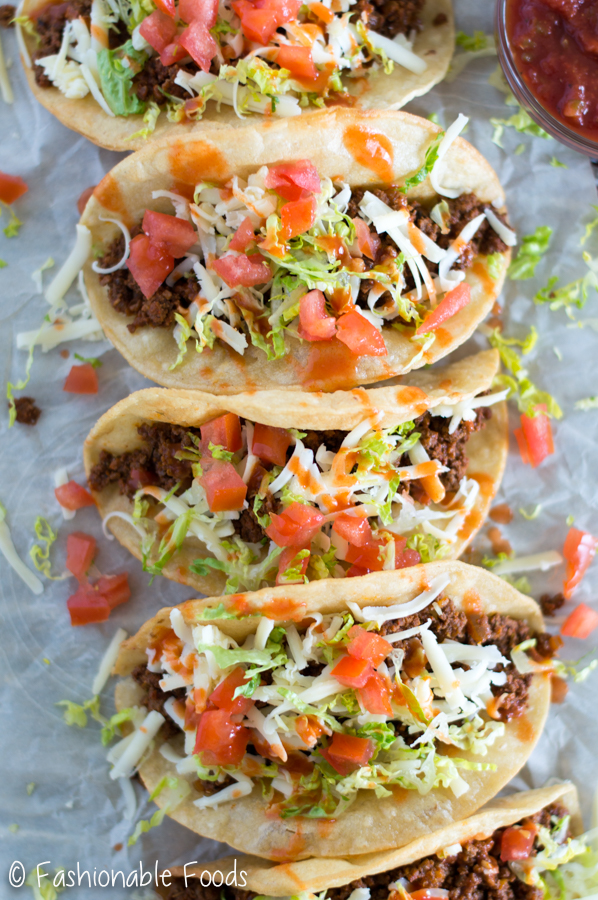

Spaghetti with Meat Sauce

Description
This recipe will show you how to make the best Tex-Mex Tacos!
Ingredients
- Ground beef of your choice. I prefer grass-fed 80/20.
- Pinto Beans. I prefer the canned beans as I like to make my own refried beans. If you prefer, you can use canned refried beans and skip that step. You can also choose to make your own pinto beans using dry beans.
- Tortillas. Make your own or buy store bought.
- Shredded Cheese
- Bell Peppers
- Red Onions
- Chilli powder
- Bacon greese (this makes the refried beans amazing!)
- Salt
- Pepper
- Cumin
- Avocado
- Cilantro
- Garlic Powder
- Taco Seasoning for the beef
- Tomatoes
- Olive Oil
- Limes
Steps
Make the Guacamole
- Half and pit the avocados. Scoop the insides into a small bowl. Dice part of your red onion. Dice tomatoes. Dice cilantro. Add ingredients to the avocado along with salt, pepper, garlic powder and lime juice. Mash until desired consistency.
Make the refried beans
- Open can of beans, drain most of liquid
- hean in a 10 inch deep skillet.
- Once warmed, add bacon greese, cumin, chilli powder, salt and pepper.
- Mash until desired consistency
Make the tacos
- Brown the beef. Once cooked, add the seasoning as directed.
- Dice and sautee onion and bell peppers in olive oil
- Heat tortillas
- In this order, assemble your tacos: tortilla, beans, cheese, beef, onions & bell peppers, guacamole.
- Enjoy!